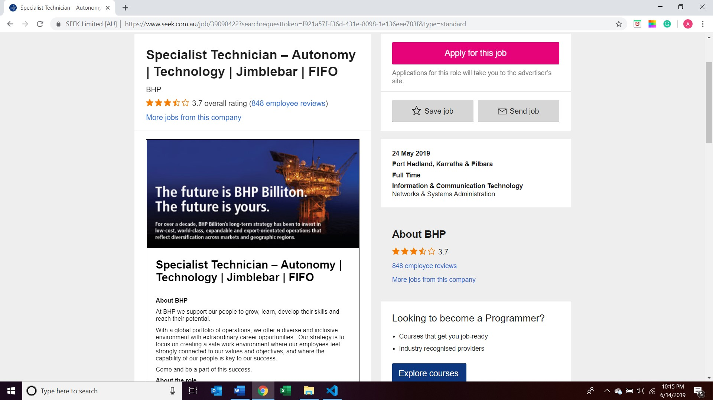

My Ideal Job
Specialist Technician – Autonomy
Specialist Technician – Autonomy Job Link
Job Description
My ideal position would be within the mining industry. The position is an autonomy technician flying in and out of a mine site on a set roaster. The role is to help maintain and service the established equipment that BHP have on-site. Jimblebar is a fully autonomous site that has trucks, stackers, loaders and trains that require service and upkeep. The site also involves the maintenance of non-production IT equiptment in the offices and communication around site. I have experience working with the autonomy technicians on-site at Jimblebar. This role appeals to me because of the conversations I have had on-site with the technicians. Working with machinery of this size excites me – plus half a year off is not too bad either
What makes this job appealing to me
The qualifications I would require for this job would take time to obtain from my current position, but Rome wasn’t built in a day. I would have to undertake courses in electronics, communications or digital Radio. Furthermore, I would need to undertake online course for FMS software and autonomous haulage technology. These are all achievable however would require time and money to complete. In terms of skills, I would need to be good with analyzing, problem solving, fault finding, troubleshooting skills. Being about to have good communication skills as well will go a long way in the job. In terms of experience, it seems that BHP don’t require the applicant to having mining experience, but it would be desired.
What skills, qualifications and experiance do I have?
In terms of my skills, I have a lot of the skills required. With my current job, I must use all the skills listed in the advert. I have very good troubleshooting skills, as well as problem solving and fault finding. In my trade, these skills are a must. I have experience on mine sites as well which is very desirable. What I lack is the qualifications and experience in the industry to back up my skills. But they are all achievable.
Plan moving forward
This course is the start for me to understand the technology industry, and granted this job is more in the field works rather than programming or coding. But it is what I love. This course will give me the base to build off and then I can move into the hardware side of the things. After I gain a qualification in IT through RMIT, I will undertake a Tafe courses to understand electronics. In between all of this I will undertake an online course in the FMS systems as well as autonomous haulage technology.